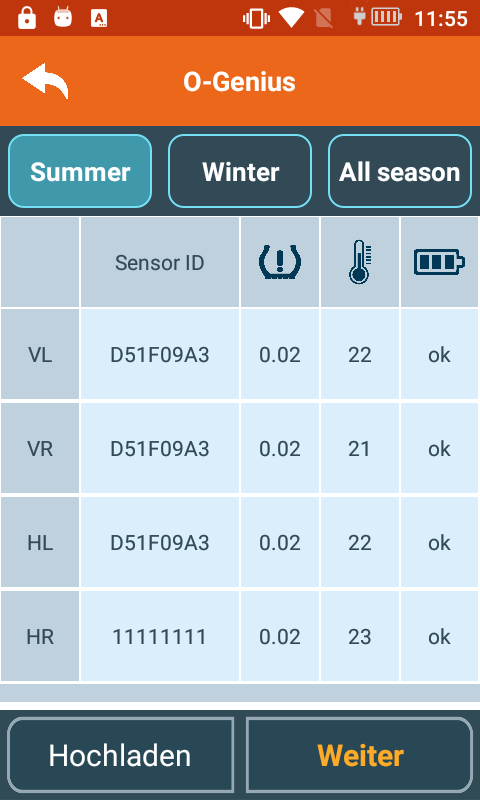

<!DOCTYPE html>
<html lang="en">
<head>
  <meta charset="UTF-8">
  <title>Title</title>
  <script src="../glitterBundle/ControlInstance.js"></script>
  <link href="../glitterBundle/bootstrap.css" rel="stylesheet">
  <link href="../fontawesome-free-5.15.4-web/css/all.min.css" rel="stylesheet">
  <script src="https://cdn.jsdelivr.net/npm/marked/marked.min.js"></script>
  <link rel="stylesheet" href="https://cdnjs.cloudflare.com/ajax/libs/highlight.js/10.7.1/styles/xcode.min.css">
  <script src="https://cdnjs.cloudflare.com/ajax/libs/highlight.js/10.7.1/highlight.min.js"></script>
  <script src="https://cdnjs.cloudflare.com/ajax/libs/highlight.js/10.7.1/languages/go.min.js"></script>
  <script src="https://cdnjs.cloudflare.com/ajax/libs/three.js/r121/three.min.js"></script>
  <link href="../css/article.css" rel="stylesheet">

</head>
<style>

  .caselist img {
    width: 80px;
    height: 80px;
    margin: 10px;
    box-shadow: 0 4px 8px 0 rgba(0, 0, 0, 0.2), 0 6px 20px 0 rgba(0, 0, 0, 0.19);
    border-radius: 10px;
    position: relative;
  }

</style>
<body>
<script>
  lifeCycle.onCreate=function (){
    hljs.highlightAll();
  }
  lifeCycle.onCreateView=function (){
    return `
<div class="inner">
  <h3 style="font-size: 39px;font-weight: 400;margin-top: 10px;">Step Flow</h3>
    <div style="height: 1px;width: 100%;background-color: whitesmoke;margin-top: 20px;margin-bottom: 20px;"></div>
    <h4>You can use Postman or other Result Ful API development tools to test and understand the whole process.</h4>
   <a  style="font-size: 20px;" onclick="glitter.openNewTab('https://www.postman.com/')">Download Postman</a>
    <div style="height: 1px;width: 100%;background-color: whitesmoke;margin-top: 20px;margin-bottom: 10px;"></div>
    <span style="font-size: 20px;line-height: 30px;"><span style="color: darkred;">Step 1.</span><br>Login and get token by <span style="color: #2a93b9;cursor: pointer;" onclick="glitter.setUrlParameter('frag','../ot_platform/Frag_Login.html');glitter.openNewTab(glitter.window.location.href);">Login API.</span><br><br>
    <span style="font-size: 20px;line-height: 30px;"><span style="color: darkred;">Step 2.</span><br>Upload appointment by <span style="color: #2a93b9;cursor: pointer;" onclick="glitter.setUrlParameter('frag','../ot_platform/Frag_AddAppointment.html');glitter.openNewTab(glitter.window.location.href);">AddAppointment API.</span><br><br>
    <span style="font-size: 20px;line-height: 30px;"><span style="color: darkred;">Step 3.</span><br>Read sensor data and upload<br>

<br><br>
<br><br>
 <div style="height: 1px;width: 100%;background-color: whitesmoke;margin-top: 20px;margin-bottom: 10px;"></div>
<br><br>
<span style="font-size: 20px;line-height: 30px;">The operation of O-genius has been completed so far, and now I will describe how to retrieve the uploaded data of O-genius from OT-Platfotm，You can get these data show on your system．</span>
<br><br>
<span style="font-size: 20px;line-height: 30px;"><span style="color: darkred;">Option 1.</span><br>Get the Sensor data of this plate-number by<span style="color: #2a93b9;cursor: pointer;" onclick="glitter.setUrlParameter('frag','../ot_platform/Frag_GetSensorData.html');glitter.openNewTab(glitter.window.location.href);"> GetSensorData API.</span><br><br>
<span style="font-size: 20px;line-height: 30px;"><span style="color: darkred;">Option 2.</span><br>Change the sensor data by<span style="color: #2a93b9;cursor: pointer;" onclick="glitter.setUrlParameter('frag','../ot_platform/Frag_AddSensorData.html');glitter.openNewTab(glitter.window.location.href);"> AddSensorData API.</span><br><br>
        </div>
</div>
    `
  }

</script>
</body>
</html>